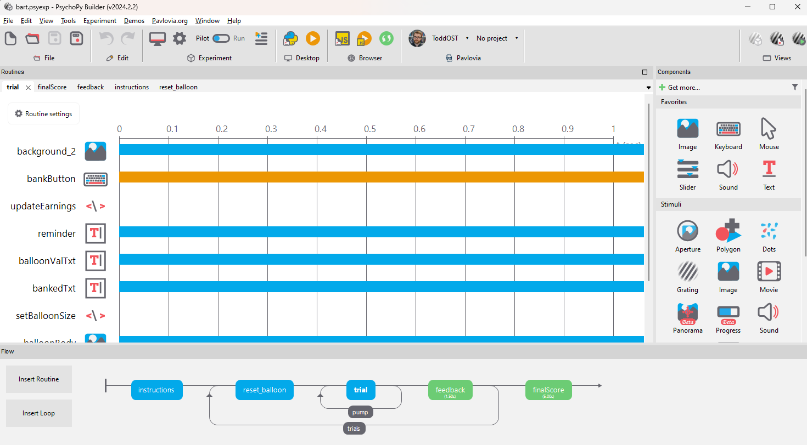
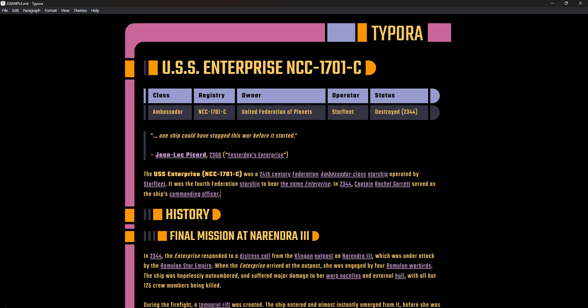
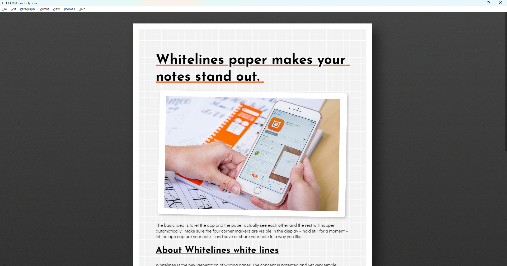

MSc Psychological Research Methods
The University of Lincoln
September 2017 - December 2019
Thesis title:
How Do Player-Avatar Relationships Mediate Physiological Responses To In-Game Events?
he/him /tɒd pɑsənz/

I'm a Python programmer with a background in psychological research, a hobbyist web / graphic designer, a TTRPG enthusiast, and generally an all round tech nerd.
PsychoPy is Python library and accompanying graphical interface for building psychology experiments, designed to be accurate enough for publication-quality research but intuitive enough for undergraduate students. I've been using PsychoPy as a student and technician for many years, and since May 2020 I've been working as a Python developer on PsychoPy. I mostly work on the front-end; improving the look and feel of the app, creating new Components and defining the code which Builder writes for them.

Anyone familiar with video gaming can attest to the physiological response we experience following certain in-game events: a racing heartbeat as you narrowly avoid an enemy attack or sweaty palms as you make a risky play with for a big payoff. Within gaming communities, the term "sweaty" is even used as slang for taking the game too seriously.
I'm interested in how our relationship to virtual avatars mediates our physiological reactions to events within a virtual environment; if your avatar takes damage in a video game, do you react differently depending on your relationship to that avatar?
The University of Lincoln
September 2017 - December 2019
Thesis title:
How Do Player-Avatar Relationships Mediate Physiological Responses To In-Game Events?
The University of Lincoln
September 2012 - June 2015
Dissertation title:
Relationships between evolutionary threat and spectral slope.
Open Science Tools Ltd.
Jan 2021 - Present
Once my contract under the University of Nottingham expired, I was taken on by OST on a permanent basis to continue working on PsychoPy, particularly the user interface.
The University of Nottingham
May 2020 - Jan 2021
I was hired under a CZI grant to help improve the stability of PsychoPy around the 2020.2 and 2021.1 releases.
The University of Lincoln
January 2017 - May 2020
As a technician, I assisted staff and students with a variety of technical issues. In particular, scripting in Matlab, creating graphical resources and managing an online research presence.
The University of Lincoln
April 2016 - December 2016
In 2016 I was employed by Professor George Mather at the University of Lincoln as a research assistant, assisting with the final year of a collaboration between himself and Doctor Rebecca Sharman, looking at early visual processing of human locomotion.
From: British Psychological Society, July 2020
To: Psychology Technician Team (University of Lincoln)
We are so proud of our amazing technicians @PsychTechnician who won the Technical Support in Psychology Award from the BPS! @BPSOfficial
Well done, and thank you for all your hard work! buff.ly/3ei5JeA
#psychlincs @bydhifu @ManOCheese @ToddEParsons @___charl
From: University of Lincoln, December 2019
To: Psychology Technician Team
Congratulations to our #psychlincs #UoLSMA19 winners yesterday!
@thisdrkmckenzie (Best Practice), @LMarechal_ & Dr Ava Horowitz (Individual Merit), @kayritchiepsych (Vice Chancellor's), #pint18lincoln (Public Engagement) and @PsychTechnician (Team Achievement)!
Phew, what a list!
Member
January 2017 - Present
Technician Representative, LGBTQI+ Champion
January 2017 - May 2020
For more information on the School of Psychology Equality Committee, please see the SPEC website.
Member
January 2017 - May 2020
For more information on the Association of Technical Staff in Psychology, please see the ATSiP website.
Member
April 2016 - May 2020
For more information on the Perception, Action & Cognition group at Lincoln, please see the PAC group website.
As you may be able to tell from this website, I enjoy making CSS themes. It gives me an outlet for my inherent aesthetic snobbery, I find it relaxing making minor tweaks to the spacing of such-and-such element to get a page rendering exactly how I want it.
Torillic is designed to look like the official material for Dungeons & Dragons, I use it to write notes for my TTRPG campaigns and to style them once compiled and hosted to wiki-style websites.

LCARS is designed to look like the fictional LCARS operating system from Star Trek. Like Torillic, I like to use it for TTRPG campaign notes, but in this case the more sci-fi adjacent settings.

Whitelines is the theme I use most in my day-to-day markdown editing. It's designed to look like Whitelines notepads, which (being a stationery nerd) are my favourite kind of notebook to write on. So it only makes sense to edit markdown on the same kind of paper!
Working with a Python-based graphical user interface (GUI) at Open Science Tools gives me a thorough familiarity with the GUI packages used in Python, sometimes I find myself wishing for certain widgets to exist so in my free time I go ahead and make them.
pygments-guipygments-gui is a plugin for Pygments, a Python package which takes code and applies syntactic styling to it. The plugin adds classes and methods for using Pygments within a GUI, styling the contents of text controls live in a fast and efficient way.
You can find pygments-gui on GitHub here.